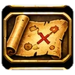
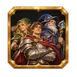
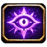
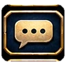
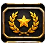
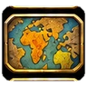
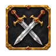
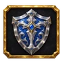
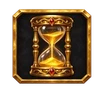

News › Communauté › Liens & chaînes
Liens & chaînes
Les sites et les créateurs que nous suivons et que nous aimons. Ils font vivre la communauté francophone de WoW Forever, et plusieurs d'entre eux nous aident à tenir ce site à jour : allez leur rendre visite !
📅 Mise à jour le 14 novembre 2026🛠 Patch 1.60.1.70938
Nos sites préférés

JudgeHype ↗La référence française de l'actu Blizzard depuis plus de vingt ans : news, guides et dossiers sur Forever.
Kami Labs ↗Guides, builds, notes de patch résumées en français et une communauté de guildes très active.
Wowhead ↗La base de données de tout le jeu : objets, quêtes, PNJ, calculateur de talents et guides, en français.
Mamytwink ↗Le site de la communauté de Mamytwink : actualités et émissions autour de WoW.
Polestar ↗Guides de leveling pas à pas pour Forever, avec un addon en jeu. Notre leveling pas à pas s'appuie sur leurs données.
Factoruide ↗Outil libre de planification de leveling et base de données du jeu, d'où viennent les fonds de notre carte interactive.Chaînes YouTube
Kami Labs ↗Les vidéos de Kami Labs : guides, conseils pour bien démarrer et tout le JcJ expliqué.

Zoltan ↗Vidéos WoW en français.
Aïdo ↗Vidéos WoW en français.
Zalidan ↗Vidéos WoW en français.Tu crées du contenu sur WoW Forever et tu aimerais apparaître ici ? Fais-nous signe. Les liens s'ouvrent dans un nouvel onglet ; ForeverWoW.fr n'est lié à aucun de ces sites.